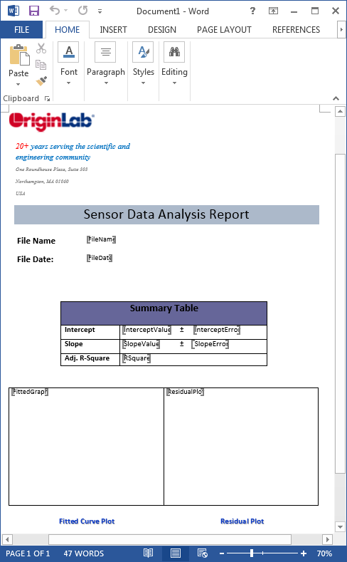
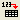
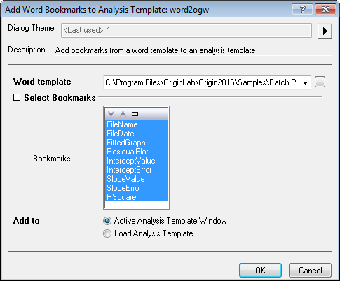
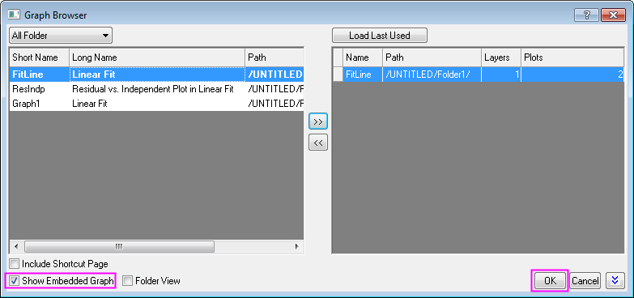
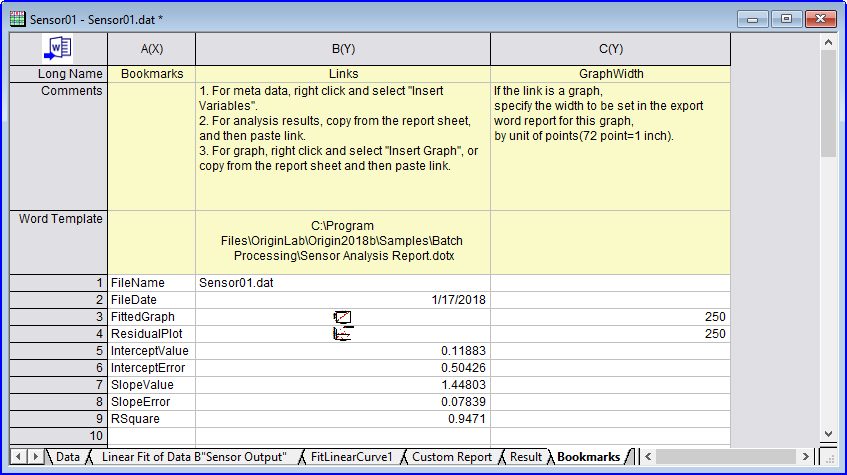
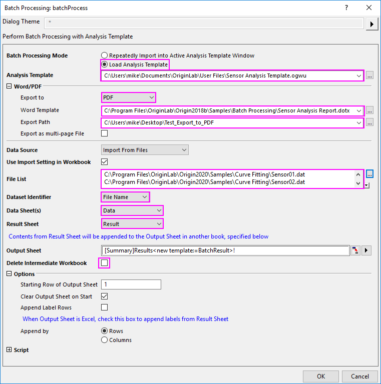
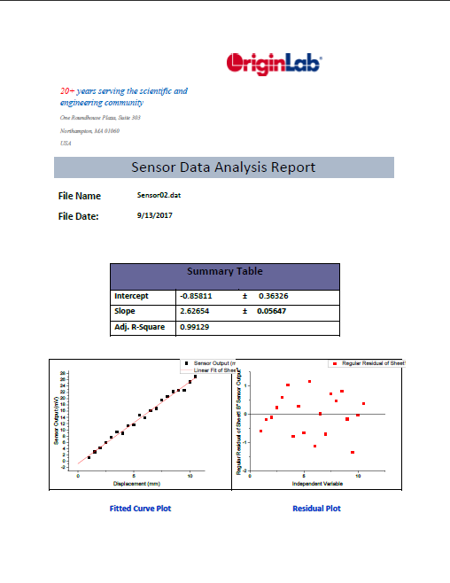

Stapelverarbeitung mit Word-Vorlage zum Erzeugen von Berichten
BatchProcess-WordTemplate
Zusammenfassung
Origin kann eine Stapelanalyse von mehreren Dateien durchführen und die mit Zellen verknüpften Analyseergebnisse in eine externe Word-Vorlage für die Berichtserstellung ausgeben.
Origin-Version mind. erforderlich: Origin 2016 SR0
Was Sie lernen werden
Dieses Tutorial zeigt Ihnen, wie Sie:
- Lesezeichen von einer Word-Vorlage zu einer spezifischen Analysevorlage hinzufügen
- Analyseergebnisse mit durch Lesezeichen markierte Zellen in der Word-Vorlage verknüpfen und die Größe der zu exportierenden Diagramme anpassen
- Einmalige Ergebnisse an eine Word-Vorlage zum Erstellen eines Word-Berichts senden
- eine Stapelanalyse von mehreren Dateien durchführen und die Ergebnisse in Word-/PDF-Dateien ausgeben
Schritte
In diesem Tutorial werden Sie die Word-Standardvorlage Sensor Analysis Report.dotx verwenden, die sich in dem Ordner <Origin-Verzeichnis>\Samples\Batch Processing\ befindet. Um die Beschriftungen der Lesezeichen auf der Word-Vorlage anzuzeigen, gehen Sie bei geöffneter Datei zu Datei: Optionen. Der Dialog Word-Optionen wird aufgerufen. Wählen Sie dann Erweitert im linken Bedienfeld, scrollen Sie zu dem Abschnitt Dokumentinhalt zeigen im rechten Bedienfeld und aktivieren Sie das Kontrollkästchen Lesezeichen zeigen.
- 
Lesezeichen zu Analysevorlage hinzufügen
- Starten Sie Origin. Klicken Sie auf Datei: Öffnen, navigieren Sie zum Ordner <Origin>\Samples\Batch Processing\, wählen Sie die Datei Sensor Analysis.ogw (NICHT "Sensor Analysis.ogwu") und öffnen Sie sie.
- Aktivieren Sie das Arbeitsblatt Data, klicken Sie auf die Schaltfläche  und navigieren Sie zum Ordner <Origin-Verzeichnis>\Samples\Curve Fitting\. Wählen Sie die Datei Sensor01.dat, um die Daten für die Analyse zu importieren.
- Wählen Sie im Menü Datei: Word-Lesezeichen zu Analysevorlage hinzufügen, um den Dialog zu öffnen. Klicken Sie auf die Schaltfläche des Browsers
 rechts von dem Feld Word-Vorlage und navigieren Sie zum Ordner <Origin-Verzeichnis>\Samples\Batch Processing\, um Sensor Analysis Report.dotx auszuwählen.
rechts von dem Feld Word-Vorlage und navigieren Sie zum Ordner <Origin-Verzeichnis>\Samples\Batch Processing\, um Sensor Analysis Report.dotx auszuwählen.
- Klicken Sie einmal, um alle Lesezeicheneinträge in der Liste Lesezeichen im Zweig Lesezeichen auswählen zu markieren, und klicken Sie auf OK, um ein Lesezeichen zu einer aktiven Analysevorlage hinzuzufügen.
- 
Analyseergebnisse mit Word-Vorlage verknüpfen
- Klicken Sie auf die Registerkarte Lesezeichen.
- Kliken Sie in der Spalte Links mit der Maustaste auf die Zelle rechts von FileName und wählen Sie Variablen einfügen.
- Klicken Sie im Dialog Variablen einfügen auf die Registerkarte Info, erweitern Sie den Knoten SYSTEM.IMPORT und markieren Sie FILENAME. Klicken Sie auf die Schaltfläche Einfügen, um den Dateinamen in die Arbeitsblattzelle einzufügen.
- Klicken Sie mit der rechten Maustaste auf die Zelle neben FileDate und wählen Sie Variablen einfügen, erweitern Sie den Knoten SYSTEM.IMPORT, markieren Sie FILEDATE und klicken Sie auf die Schaltfläche Einfügen, um das Dateidatum in die Arbeitsblattzelle einzufügen. Beachten Sie, dass der Wert, der eingefügt wird, ein Julianischer Tageswert ist, d. h. die Zahl, die Origin intern zum Speichern von Datums-/Zeitdaten verwendet. Damit es als vertrautes Datumsformat angezeigt wird, klicken Sie mit der rechten Maustaste auf die Zelle und wählen Sie Zellen formatieren.
- Wählen Sie in der Auswahlliste Format die Option Datum und klicken Sie auf OK, um den Dialog zu schließen.
- Klicken Sie mit der rechten Maustaste auf die Zelle neben der Zelle FittedGraph und wählen Sie Diagramm einfügen. Klicken Sie auf die Schaltfläche zum Navigieren rechts von dem Feld Diagramme, um den Dialog Diagrammbrowser zu öffnen. Aktivieren Sie Eingebettetes Diagramm zeigen, um eine Liste der im Arbeitsblatt eingebetteten Diagramme anzuzeigen. Klicken Sie einmal, um das Diagramm FitLine auszuwählen, und fügen Sie es zum rechten Bedienfeld hinzu. Klicken Sie zweimal auf OK, um das Diagramm in das Arbeitsblatt Lesezeichen einzufügen. Geben Sie in der Spalte GraphWidth auf der rechten Seite 250 (Einheiten = Punktgröße) ein, um die Größe des Diagramms, das in Word exportiert wird, festzulegen.
-

- Wiederholen Sie den letzten Schritt für die Zeile ResidualPlot.
- Bei Lesezeichen, die mit Parameterwerten in Verbindung stehen, können Sie Werte aus dem Berichtsblatt FitLinear1 kopieren und als Verknüpfung einfügen. Klicken Sie auf das Berichtsblatt FitLinear1 und suchen die Tabelle Parameter. Klicken Sie auf die Datenzelle beim Schnittpunkt von Schnittpunkt mit der Y-Achse und Wert, klicken Sie mit der rechten Maustaste und wählen Sie Kopieren. Kehren Sie zu dem Blatt Lesezeichen zurück, klicken Sie mit der rechten Maustaste rechts von InterceptValue und wählen Sie Link einfügen, um die Verknüpfung zwischen Lesezeichen in der Word-Vorlage und Werten im Berichtsblatt herzustellen.
- Wiederholen Sie die Operation "Kopieren und Link einfügen", um den Rest der Zellen in der Spalte Links zu füllen (Sie finden den Wert R-Quadrat neben Kor. R-Quadrat in der Tabelle Statistik). Wenn Sie damit fertig sind, wählen Sie im Menü Datei: Arbeitsmappe als Analysevorlage speichern und speichern Sie die Analysevorlage als Sensoranalysevorlage.ogw oder .ogwu.

Einmalige Ergebnisse an eine Word-Vorlage zum Erstellen eines Word-Berichts senden
Manchmal möchten Sie vielleicht nur eine Datendatei analysieren und schnell einen Word-Bericht erstellen. Fahren Sie mit dem obigen Beispiel fort. Angenommen, Sie haben alle Ergebnisse mit Word-Textmarken verknüpft, wie im Arbeitsblatt Lesezeichen gezeigt, um einen einmaligen Word-Bericht für das aktive Blatt zu erstellen. Dann können Sie einfach auf die Schaltfläche In Word exportieren  oben links klicken, um ihn zu erstellen.
oben links klicken, um ihn zu erstellen.
Weiterhin können Sie im angezeigten Dialog Exportpfad festlegen, wo der Word-Bericht ausgegeben werden soll.
Stapelanalyse durchführen und Ergebnisse in Word-/PDF-Dateien exportieren
 |
Seit Origin 2020 können Sie Berichte im Format PDF und MS Word als einzelne mehrseitige Datei exportieren. Dazu aktivieren Sie das Kontrollkästchen Als mehrseitige Datei exportieren, bevor Sie Ihre Stapeloperation ausführen.
|
- Öffnen Sie ein neues Projekt.
- Klicken Sie auf die Schaltfläche Stapelverarbeitung
 .
.
- Stellen Sie sicher, dass Analysevorlage laden als der Modus der Stapelverarbeitung ausgewählt ist. Wählen Sie in der Auswahlliste Analysevorlage die Datei Sensoranalysevorlage.ogw(u), die Sie zuvor erstellt haben (Sie müssen möglicherweise auf die Schaltfläche rechts von der Liste klicken und zu der gespeicherten Datei navigieren).
- Wählen Sie die Option PDF in der Auswahlliste Exportieren in, um den Bericht als PDF-Datei zu exportieren.
- Klicken Sie auf die Schaltfläche des Browsers rechts von dem Feld Word-Vorlage und navigieren Sie zum Ordner <Origin-Verzeichnis>\Samples\Batch Processing\, um Sensor Analysis Report.dotx auszuwählen.
- Optional können Sie auf die Schaltfläche zum Navigieren rechts von Exportpfad klicken, um einen anderen Pfad für den Export festzulegen.
- Klicken Sie auf die Schaltfläche zum Navigieren rechts von Dateiliste, navigieren Sie zum Ordner <Origin-Verzeichnis>\Samples\Curve Fitting und wählen Sie alle Sensordateien Sensor0#.dat.
- Klicken Sie auf Hinzufügen und dann auf OK.
- Wählen Sie Dateiname unter Datensatzidentifikator.
- Stellen Sie sicher, dass in der Auswahlliste Datenblatt die Option Daten festgelegt ist.
- Stellen Sie sicher, dass in der Auswahlliste Ergebnisblatt die Option Ergebnis festgelegt ist.
- Stellen Sie sicher, dass Zwischenmappen löschen.
- Klicken Sie auf OK, um den Dialog zu schließen und die "Sensor"daten zu verarbeiten.
-

|
Falls Sie vergessen, wo Sie Ihre exportierten PDF-Dateien finden, wird der Speicherort im Meldungsprotokoll ausgegeben.
|
Ein Beispiel für den exportierten Bericht in PDF-Version finden Sie im Folgenden:
